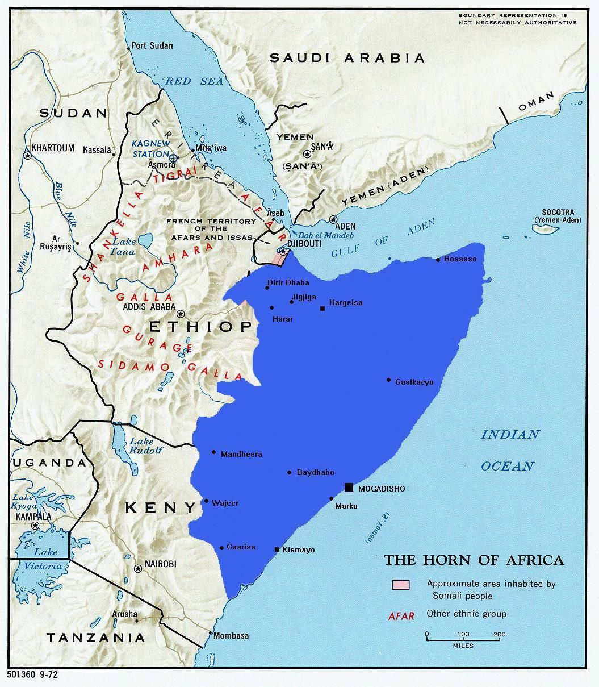
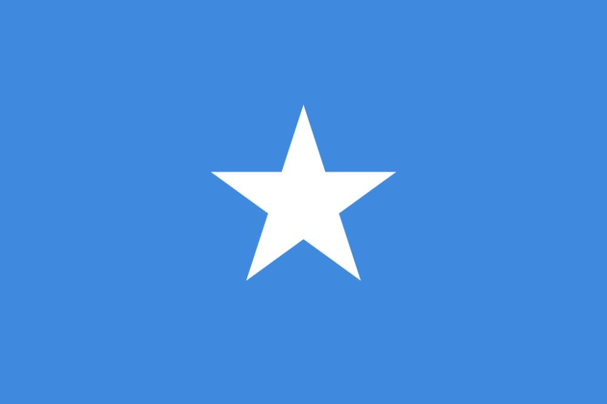
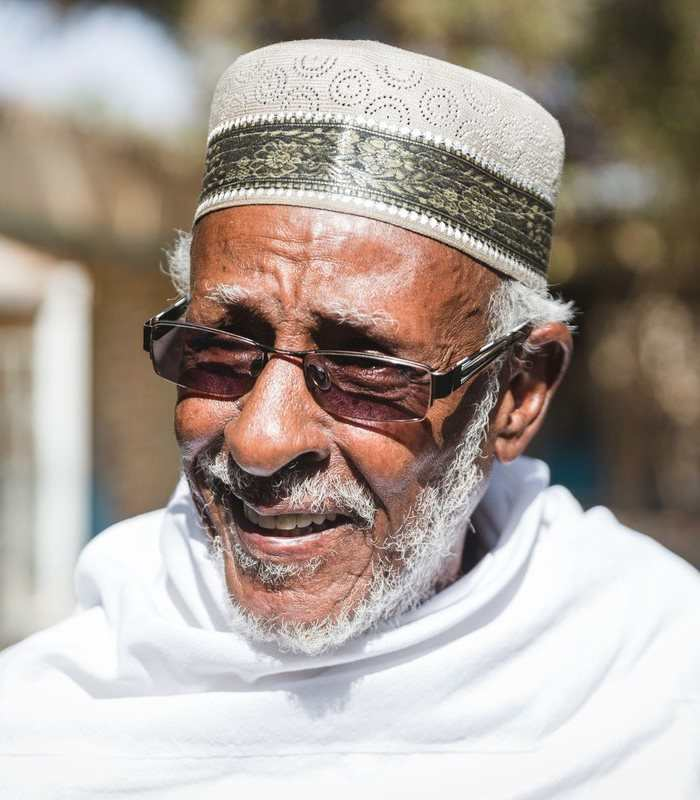

Suugaan
Xaaji Aadam Afqalooc
Baro taariikhda, safarradii, suugaantii iyo noloshii Xaaji Aadam Axmed Xasan Afqalooc, oo ahaa abwaan iyo dhulmareen Soomaaliyeed.
Read MoreAkhri qoraallo ku saabsan Af-Soomaaliga, suugaanta, taariikhda, iyo dhaqanka bulshada Soomaaliyeed.
Baro taariikhda, safarradii, suugaantii iyo noloshii Xaaji Aadam Axmed Xasan Afqalooc, oo ahaa abwaan iyo dhulmareen Soomaaliyeed.
Read More
Wax ka ogow juqraafiga Soomaaliya, xeebaha, webiyada, buuraha iyo noocyada kala duwan ee dhulkeena.
Read MoreSheeko murtiyeed ka hadlaysa saaxiibtinimo, kalsooni, dulqaad iyo casharro laga baran karo dhacdooyinka nolosha.
Read More
Baro taariikhda madaxbannaanidii Soomaaliya, dhalashadii Jamhuuriyadda, dowladdii rayidka, afgambigii 1969 iyo dhacdooyinkii siyaasadeed ee xigay.
Read More
Baro taariikhda iyo noloshii Maxamed Ibraahim Hadraawi, hal-abuurkii Soomaaliyeed ee caan ku ahaa gabayada, heesaha, riwaayadaha iyo suugaanta Soomaaliyeed.
Read More
Baro taariikhda iyo horumarka magaalooyinka waaweyn ee Soomaaliya sida Muqdisho, Hargeysa, Zaylac, Berbera, Kismaayo iyo Marka.
Read More